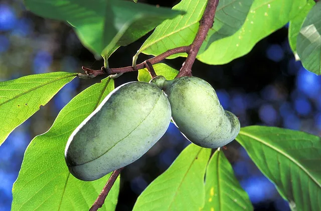
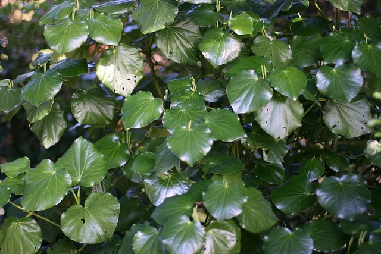

What's wild near you this month
Pick your country to see which wild greens, berries, nuts and roots are in season where you live, how to harvest them, what to avoid, and what to cook.

United States73 wild foods · 41 dishes Switzerland43 wild foods · 23 dishes
Switzerland43 wild foods · 23 dishes Australia27 wild foods · 22 dishes
Australia27 wild foods · 22 dishes Norway32 wild foods · 17 dishes
Norway32 wild foods · 17 dishes Denmark44 wild foods · 17 dishes
Denmark44 wild foods · 17 dishes Canada58 wild foods · 20 dishes
Canada58 wild foods · 20 dishes United Kingdom46 wild foods · 22 dishes
United Kingdom46 wild foods · 22 dishes Germany48 wild foods · 19 dishes
Germany48 wild foods · 19 dishes Netherlands40 wild foods · 13 dishes
Netherlands40 wild foods · 13 dishes Sweden34 wild foods · 14 dishes
Sweden34 wild foods · 14 dishes
New Zealand21 wild foods · 15 dishes India100 wild foods · 124 dishes
India100 wild foods · 124 dishes